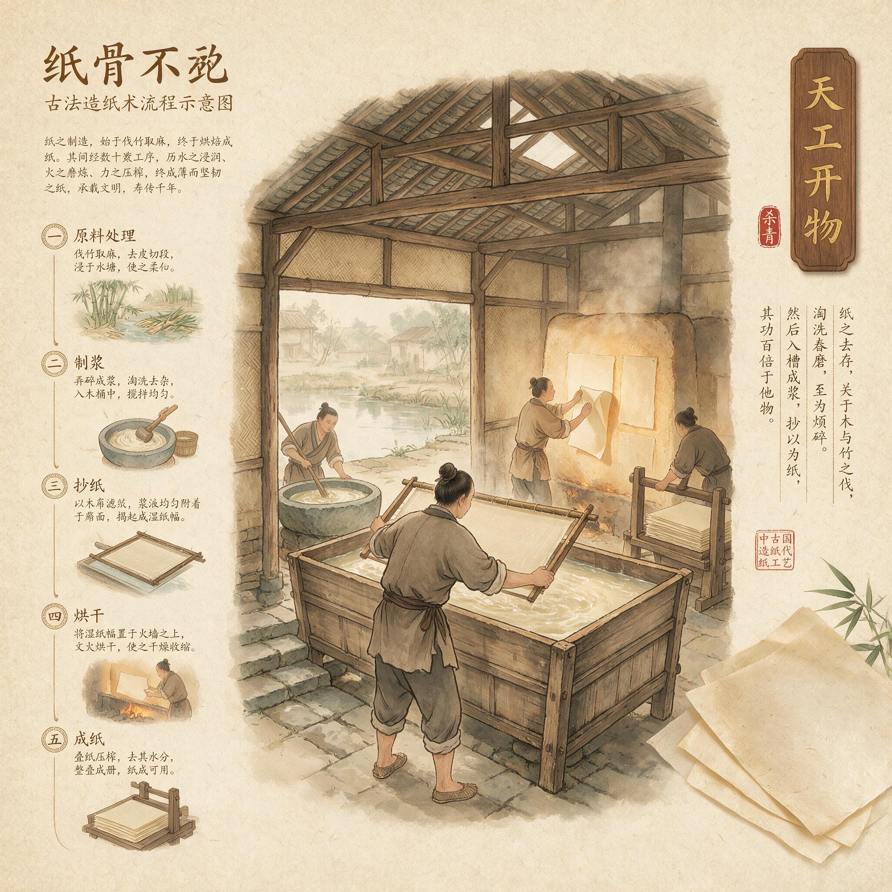

第 30 章
纸骨不朽
一张纸平摊在案上。它不是蔡伦造的。它造于西晋某年某月，出自某个不知名工匠之手，用破布、麻头和桑树皮舂捣成浆，在竹帘上抄出薄薄一层，压榨去水，贴在火墙上烘干。
纸面泛着淡淡的黄，帘纹细密而均匀，迎着光看，纤维交织成一种不规则的网状结构——那是水流的痕迹，是舂捣的痕迹，是双手在纸浆中反复抄荡的痕迹。

古法造纸术流程示意图
AI 生成插图，非史实影像。
这张纸上写着字。墨迹已经渗入纤维深处，不再是浮在表面的符号，而是纸的一部分。写字的人早已死了，造纸的人也早已死了，但纸还在，字还在。
这张纸此刻正躺在一个东晋官员的书案上，它的存在本身就是一个问题：为什么偏偏是蔡伦？这个问题问了两百年。从洛阳宫中的尚书台问到建康城南的纸肆，从抄经的僧侣问到修史的士人，答案换了一茬又一茬。有人说他是天才，有人说他运气好，有人说他只是站在了前人的肩膀上。
但所有这些答案都绕开了同一个事实：在蔡伦之前，不是没有人尝试过用植物纤维制造书写材料。灞桥纸的残片埋在黄土里，早于蔡伦两个世纪；
居延的金关纸、扶风的中颜纸，时间都在他之前。那些粗糙的、厚薄不均的、纤维未经充分分离的薄片，证明了一个道理：技术从来不是一个人凭空想出来的。
但另一个事实同样坚硬：那些早期的纤维薄片没有成为纸。它们没有进入书写，没有进入行政，没有进入知识传播。它们被埋掉了。
为什么偏偏是蔡伦？这个问题必须被拆开。第一问：为什么是他，而不是某个前代工匠？第二问：为什么是这个时候，而不是更早或更晚？第三问：为什么造纸术一旦诞生，就再也没有消失？
答案不在蔡伦的天才里。答案在他的一生里。耒阳的铁官作坊里，一个孩子站在铁砧旁边。那不是蔡伦——史书没有记载他童年的任何细节，我们不知道他几岁开始看父亲打铁，不知道他第一次拿起锤子是什么感觉。但我们知道一件事：耒阳在东汉是桂阳郡的治所，桂阳郡有铁官。铁官是官府手工业的核心部门，掌管采矿、冶炼、铸造，从农具到兵器，从钱币到车马器，一切铁制品的生产都归铁官管辖。
铁官作坊里的孩子，从小看见的不是笔墨纸砚，而是矿石、熔炉、铁砧、锤子。他们看见铁在火中烧红，在锤下变形，在水中淬硬。他们学会的第一件事是：材料是可以被改变的。施加足够的力、足够的温度、足够的反复，一种材料会变成另一种材料。
这是蔡伦的第一重结构性条件。不是他选择了铁官家庭，而是铁官家庭选择了他。他的身体记忆不是握笔书写的记忆，而是捶打、折叠、淬炼的记忆。
铁匠的工作是对材料施压：把矿石砸碎，把铁块锻打成形，把粗铁反复折叠锻打以去除杂质。每一次捶打都在改变材料的内部结构，每一次淬火都在重新排列晶格。这种身体直觉——材料在力的作用下会发生不可逆的变化——是蔡伦带到造纸术里的第一件工具。
但仅有这件工具还不够。东汉的铁官作坊遍布全国，桂阳的铁匠不止一家，铁匠的儿子也不止一个。他们中没有人发明造纸术。
所以必须追问第二重条件：蔡伦为什么离开了耒阳？永平末年，蔡伦入宫。史书没有记载入宫的原因——是家贫难以为继？是犯罪连坐？是主动净身以求进身之阶？
我们不知道。我们只知道结果：他成了宦官。在东汉的宫廷制度中，宦官是一个特殊的群体。他们失去了身体的完整性，也因此失去了在正常社会秩序中立足的资格；但他们获得了接近皇权的通道。这种交换是残酷的，也是制度性的。
宦官制度的存在本身就是一个筛选器：它筛选出那些愿意以身体为代价换取权力机会的人，然后把他们投入宫廷的权力场中，让他们在皇帝、外戚、士大夫三股力量之间寻找生存空间。
蔡伦在这个权力场中活了下来。他活下来的方式不是对抗，而是服务。他从一个小黄门做起，逐步升迁，到汉章帝建初年间已经进入中常侍的行列。中常侍是皇帝身边最亲近的宦官群体，负责传达诏命、掌管文书、顾问应对。
这个位置给了蔡伦两样东西：第一，他接触到了帝国的文书系统，知道了竹简和缣帛作为书写材料的局限性——竹简笨重，缣帛昂贵，帝国的行政运作被书写材料的瓶颈死死卡住；第二，他学会了在宫廷政治中生存的规则：你必须有用。一个宦官如果没有用，随时可以被替换、被贬黜、被处死。
有用意味着能做事，能做事意味着能被皇帝记住，能被皇帝记住意味着安全。这是宦官身份对皇权的依附性自证需求。这个需求像一台永不停歇的发动机，推动着蔡伦不断寻找能够证明自己价值的机会。
当汉和帝即位，邓太后临朝，蔡伦被任命为尚方令时，这个机会来了。尚方令是少府下属的官职，掌管皇家工坊。尚方作坊制造的是御用器物：刀剑、铜镜、漆器、玉器、舆服。这是东汉手工业技术的最高汇聚点。全国最优秀的工匠被征调到尚方，最珍贵的材料被汇集到尚方，最苛刻的质量标准被施加到尚方。尚方令的职责不是亲自制造器物，而是组织、监督、考核工匠的生产活动。
这个位置赋予了蔡伦第二重结构性条件：调用皇家工坊资源、组织全国工匠网络、不受成本约束进行试错的权力。
一个铁官家庭出身的宦官，掌管了全国最高水平的皇家工坊。这不是巧合，这是制度逻辑的自然展开。东汉的尚方系统需要懂技术、能管工匠的人来主持，而蔡伦恰好具备这两项条件：他从小在铁官作坊长大，对材料加工有身体直觉；
他在宫中服务数十年，对宫廷行政有深刻理解。他是制度的产物，被制度推到了这个位置上。
石臼房里的试验开始了。麻皮、破布、旧渔网、树皮——这些废弃的纤维材料被投入石臼，加水舂捣。舂捣不是研磨，不是粉碎，而是对纤维施加反复的冲击力，让纤维束在水中分散成单根纤维，同时保留纤维的长度和强度。
这个关键工序的发现，不是从天上掉下来的灵感，而是从铁官冶铸工艺中迁移过来的身体记忆。铁匠反复捶打铁块以去除杂质、均匀材质；蔡伦反复舂捣纤维以分离纤维束、形成均匀浆料。两种工艺共享同一个原理：通过反复施加机械力，改变材料的内部结构。
但舂捣只是第一步。接下来的工序——打浆、抄纸、压榨、烘壁——每一步都需要反复试验。抄纸用的竹帘要多密？纸浆的浓度要多高？压榨的压力要多大？烘壁的温度要多高？这些参数不是一次就能确定的。它们需要成百上千次的试错。每一次试错都需要材料、人工和时间。在东汉的技术条件下，这种规模的试错只有一种地方能够承担：皇家工坊。
尚方令的制度位置给了蔡伦不受成本约束进行试错的权力。他可以调用全国最好的麻料，可以征调最有经验的工匠，可以失败一百次而不必担心破产。这种制度资源是任何民间工匠都不可能拥有的。
元兴元年，蔡伦把改进造纸术的成果报告给皇帝。史书的记载简洁到近乎冷漠：“伦乃造意，用树肤、麻头及敝布、鱼网以为纸。元兴元年奏上之，帝善其能，自是莫不从用焉。”
但在这两行字背后，是一条完整的因果链：铁官家庭的捶打工艺赋予了他对材料施压的身体直觉，尚方令的制度位置赋予了他调用皇家工坊资源进行试错的权力，宦官身份对皇权的依附性自证需求赋予了他将工艺突破转化为政治功绩的持续动力。这三重条件的叠加在东汉中期的历史时点上仅此一人。
造纸术的诞生因此是制度位置的副产品，而非个人灵感的产物。这不是贬低蔡伦。恰恰相反，这是理解蔡伦的唯一方式。如果把他当作天才，他的成就就变成了一次性的奇迹，不可复制、不可解释；
但如果把他放回制度结构中，他的成就就变成了一个可以被分析的因果过程——而这个过程中每一个环节的必然性，都比任何天才传说更加震撼人心。因为这意味着：造纸术的诞生不是偶然的幸运，而是制度力量长期作用的结果。铁官制度在桂阳郡的存在，宦官制度在东汉宫廷的存在，尚方制度在皇家手工业中的存在——这三套制度各自运行了上百年，各自塑造了无数人的命运，最终在蔡伦身上交汇。交汇的结果是一种新材料从石臼中诞生，而这种新材料将在未来两千年间彻底改变人类文明的物质基础。
这就是“纸骨”的第一层含义：纸张不是蔡伦凭空创造出来的，而是他从制度结构中“舂捣”出来的。就像石臼中的纤维在水中重新组合成一张纸的骨架，蔡伦一生中的三重结构性条件在他担任尚方令的时间点上重新组合成了造纸术诞生的必要条件。纸骨是制度的骨骼。
但故事还没有结束。造纸术诞生之后，蔡伦的命运继续被制度力量推向前进。元初元年，朝廷封蔡伦为龙亭侯。这是宦官能够获得的最高爵位之一。
封侯意味着他不再仅仅是一个技术官僚，而是进入了帝国的权力核心。他有了封地、有了食邑、有了政治分量。
但这种政治分量是一把双刃剑：它让蔡伦在邓太后临朝时期获得了巨大的权力空间，也让他在邓太后死后变成了必须被清算的对象。
宫廷政治的逻辑是简单而残酷的：权力依附于人身。当邓太后活着的时候，她庇护着蔡伦；当邓太后死了，蔡伦就失去了庇护。
更致命的是，蔡伦曾经卷入过宫廷内部的权力斗争——他受窦皇后指使，参与了对宋贵人的迫害。这件事在窦皇后当权时不是问题，在邓太后临朝时也不是问题，但到了汉安帝亲政时，就成了致命的旧案。汉安帝是宋贵人的孙子。他要为祖母复仇。
建光元年，邓太后崩。汉安帝亲政，旧案重提。蔡伦被带到廷尉受审。他没有等到判决下来——他在审讯之前就服毒自尽了。
这个结局不是意外，而是宦官身份的制度性绝境。宦官的全部权力都来自皇权的授予和庇护，他们没有独立的权力基础——没有家族势力、没有地方根基、没有士人网络。
一旦失去皇权的庇护，他们就是权力场上最脆弱的人。蔡伦在宫廷中经营了数十年，建立了庞大的关系网络，积累了巨大的政治资本，但所有这些都在汉安帝的一道诏令面前化为乌有。他的生命被制度碾碎了。
这是“纸骨”的第二层含义：蔡伦的命运是制度力量碾碎个体的典型案例。他的三重身份——铁官之子、尚方令、龙亭侯——每一个都是制度赋予的，每一个都推动他走向更高的位置，但每一个也都让他更深地嵌入权力结构之中，直到无法脱身。他的一生是一条被制度力量不断推向前进的生命轨迹，造纸术的诞生是这条轨迹上的一个节点，服毒自尽是这条轨迹的终点。纸骨也是这副制度骨骼上最深刻的一道裂痕。
但故事仍然没有结束。蔡伦死后，造纸术脱离了他的个人命运，进入了独立的技术生命史。汉安帝虽然逼死了蔡伦，却没有废除造纸术。他做不到。因为造纸术一旦诞生，就不再属于任何个人。它属于整个帝国行政系统。从洛阳到郡县，从尚书台到乡啬夫，帝国的文书流转需要纸。
竹简太重，缣帛太贵，纸是唯一能够同时满足成本和效率要求的书写材料。行政运作的逻辑不以个人恩怨为转移：汉安帝可以杀蔡伦，但他不能命令全国的官吏回到竹简时代。
于是造纸术开始扩散。从洛阳尚方扩散到各地官府作坊，从官府作坊扩散到民间纸坊，从中原扩散到江南、巴蜀、河西、岭南。蔡伦死后两个世纪内，造纸术完成了从东汉宫廷向整个东亚文明圈的扩散。
这个扩散过程不是简单的技术传播——它是文明形态的转型。纸张改变了文字的生产成本。在竹简时代，写一部书需要砍伐竹子、劈成简条、打磨光滑、编联成册；在缣帛时代，写一部书需要养蚕缫丝、织成帛绢、裁剪染色。这两种材料的成本都高到足以把书写限制在极少数人手中。纸张改变了这一切：破布、麻头、树皮——这些原本是废弃物的材料变成了书写的载体，成本下降到缣帛的百分之一、竹简的十分之一。
文字生产不再是一种奢侈，而是一种可以大规模进行的日常活动。成本下降带来的是数量爆炸。东汉末年到魏晋南北朝时期，书籍的数量急剧增长。
官府藏书从东汉初年的数千卷膨胀到梁代的数万卷，民间藏书从几乎为零增长到士族家家有书。书籍数量的增长反过来催生了新的知识生产方式：注释、集解、类书、别集——这些新的文体类型都是在纸张普及之后才成为可能的。
数量爆炸带来的是传播加速。纸张轻便、易于携带、便于复制。一部写在纸上的书可以被抄写十份、百份、千份，每一份都可以被带到新的地方，成为新的抄写母本。知识传播的速度和范围以前所未有的方式扩大。佛教经典沿着丝绸之路从西域传入中原，被翻译成汉文，抄写在纸上，再从中原传播到朝鲜半岛和日本列岛——这条传播链的物质基础就是纸张。
传播加速带来的是知识垄断的瓦解。在竹简和缣帛时代，知识是一种稀缺资源，掌握在宫廷和少数士族手中。纸张让知识变得廉价和易得，打破了这种垄断。东汉末年的太学生运动、魏晋时期的清谈风气、南北朝时期的佛道论争——这些大规模的知识活动都以纸张的物质条件为前提。
没有纸，就没有士人阶层的兴起；没有士人阶层的兴起，就没有科举制的诞生；
没有科举制，就没有此后一千年中国社会的流动性结构。这是“纸骨”的第三层含义：纸张在蔡伦死后成为了支撑文明信息秩序的骨骼。帝国行政的文书流转依赖纸张，士人文化的知识传播依赖纸张，宗教经典的文本传承依赖纸张。这副纸做的骨骼在蔡伦死后两千年间持续支撑着中华文明的信息秩序——从汉代的诏书到唐代的诗集，从宋代的科举试卷到明代的地方志，从佛经的抄本到儒家的注疏，一切文字都在纸上活着。
而蔡伦本人呢？他在官方史传、士人评价与民间记忆的三重书写中，从一个有政治污点的宦官被重塑为技术圣贤。《后汉书》为他立传，称他“有才学”，“监作秘剑及诸器械，莫不精工坚密，为后世法”。这是官方史传的书写策略：把蔡伦的技术成就从他的政治污点中剥离出来，单独表彰。
范晔写《后汉书》时距离蔡伦之死已经过去了两百多年，他有足够的距离来做这种剥离——但剥离本身恰恰证明了一个事实：蔡伦的发明已经变得如此重要，以至于修史者必须为他寻找一个超越政治污点的历史位置。
士人的评价则更加复杂。有人赞扬他的技术贡献，有人鄙视他的宦官身份，有人试图在这两者之间找到平衡。
但无论如何评价蔡伦这个人，没有人能否认造纸术改变了士人的生存方式。士人之所以能够成为士人——能够读书、著书、藏书、以知识为业——恰恰建立在纸张提供的物质基础之上。
这种深刻的依赖关系让士人对蔡伦的评价始终带着一种结构性反讽：他们用纸书写对蔡伦的批评，而纸本身就是蔡伦的遗产。
民间记忆则走上了另一条路。“蔡侯纸”这个名称本身就是一种记忆方式：它把一张纸和一个名字绑定在一起，让每一个使用纸张的人都成为记忆的载体。
造纸作坊里供奉蔡伦为祖师，工匠们在每年特定的日子里祭祀他的牌位，口耳相传关于他的故事——这些故事与史书记载可能相去甚远，但它们完成了另一种功能：把蔡伦从一个有复杂政治经历的历史人物简化为一个技术圣贤的象征符号。这三重书写共同完成了对蔡伦的重塑。
但这个重塑的过程本身恰恰证明了全书的论点：蔡伦的意义不在于他的个人品质或天才灵感，而在于他所处的制度位置让他成为了造纸术诞生的必要条件。后世对他的记忆和评价，无论褒贬，都不得不在他留下的技术遗产面前重新组织自己。
现在我们可以回答那个问题了：为什么偏偏是蔡伦？因为铁官家庭的冶铸捶打工艺给了他材料施压的身体直觉，因为尚方令的制度位置给了他调用皇家工坊资源的权力，因为宦官身份的政治依附性给了他持续的自我证明动力。
这三重条件缺一不可：有铁官背景的人很多，但他们没有尚方令的权力；有尚方令权力的人也有过，但他们没有铁官的身体记忆；有宦官身份的人更多，但他们既没有铁官背景也没有尚方职位。三重条件在东汉中期的历史时点上仅在蔡伦一人身上叠加。
这不是天才的故事。这是制度的故事。但制度的故事一旦讲完，纸的故事才刚刚开始。那张摊在案上的西晋古纸还在。它的纤维交织成网，帘纹均匀细密，墨迹渗入纤维深处。它不记得蔡伦的名字——纸没有记忆。
但它承载着蔡伦死后两百年的历史：一个不知名的工匠在某个地方用蔡伦的方法造出了这张纸，另一个不知名的士人在某个时候用这张纸写下了文字，然后这张纸被保存下来，被传递下去，被摊开在一个东晋官员的书案上。
这个官员的名字叫谢峻。他不知道这张纸是谁造的、在哪里造的、用什么原料造的。
但他知道一件事：这张纸正在做一件竹简做不到的事——它让文字变得轻盈。轻盈到可以被一个人随手拿起，被放进书箧带到千里之外，被抄写十份分赠友人，被埋进墓穴陪葬死者，被贴在佛寺墙上供人诵读。轻盈到文字不再是需要专门场所和专门人力才能移动的重物，而是可以随着人的流动而流动的信息。
这种轻盈改变了文明的结构。当文字变得轻盈之后，行政命令可以从中央迅速传递到边疆，税收账目可以在郡县之间准确核对，法律条文可以被复制到每一个基层治所。帝国的治理能力因为纸张而大幅提升——这不是夸张，而是物质条件与行政效率之间的直接因果关系。
秦汉帝国用竹简统治了四百年，但竹简时代的行政运作始终受到信息传递速度和成本的限制；纸张打破了这个限制，让帝国行政进入了一个新的效率区间。
当文字变得轻盈之后，知识可以从宫廷和官府流向民间，从少数精英流向更多读书人，从中心地区流向边缘地带。知识的民主化不是一种理念选择，而是一种物质后果——当书写材料的成本降到足够低的时候，知识垄断就失去了物质基础。东汉末年私学的兴起、魏晋时期士族的壮大、隋唐科举制的确立，这些制度变革的背后都站着同一件东西：纸。
当文字变得轻盈之后，思想可以跨越时间和空间进行对话。一个汉代学者写在纸上的注经文字，可以被三百年后的南北朝僧人引用到佛经翻译中；一个洛阳诗人写在纸上的诗句，可以被五百年后的长安举子背诵在考场上；一个印度僧侣口授的经文，可以被翻译成汉文抄写在纸上，然后传到朝鲜、传到日本、传到越南。纸张是思想流动的河床——河床不决定水的流向，但决定了水能流多远。这就是纸骨不朽的真正含义。不是蔡伦不朽。
蔡伦的骨头已经在土里埋了两千年，化为泥土的一部分。他的政治污点被史书记录下来，他的技术贡献被后人铭记，他的名字被刻在造纸作坊的牌位上——但这些都不是不朽。真正不朽的是纸本身。
纸是一种骨骼。它不是生物的骨骼——生物的骨骼会腐烂；它是文明的骨骼——支撑着信息的生产、传播和保存，让一个文明得以跨越时间和空间保持连续性。这副骨骼不是自然生长的产物，而是人类双手制造出来的：舂捣赋予它纤维结构，抄帘赋予它均匀厚度，压榨赋予它致密质地，烘壁赋予它持久韧性。每一道工序都在为这副骨骼增加强度，每一张纸都是这副骨骼的一个细胞。
而制造这副骨骼的方法，是一个叫蔡伦的人在公元二世纪初的洛阳尚方工坊里确立的。他确立的不是一张纸的具体配方，而是一整套纤维处理的工艺原理：选料、浸泡、舂捣、打浆、抄纸、压榨、烘干——这套原理在此后两千年间被无数工匠不断改进和完善，但它的基本结构从未改变。蔡伦确立的是纸骨的基因。谢峻合上书卷，放回架上。
窗外秦淮河上的船桨声渐渐远去，夕阳把水面染成暗红色。对岸纸肆门口的纸捆已经搬完了，柳树下空空荡荡，只有几片落叶在水面上漂着。明天还会有新的纸运来。后天也是。大后天也是。纸的时代没有尽头。
因为纸骨一旦诞生，就有了自己的生命。它不再属于蔡伦，不再属于尚方，不再属于皇权。它属于每一个造纸的工匠、每一个抄书的士人、每一个读经的信徒、每一个用纸包鱼的贩夫走卒。它在无数人的手中传递、变形、生长，最终成为文明本身的骨架。
这副骨架支撑过东汉尚书台的诏令流转，支撑过魏晋名士的清谈著书，支撑过唐代诗人的千古绝句，支撑过宋代刻本的万卷藏书，支撑过明清科举的八股试卷，支撑过近代报刊的思想风暴。它还将继续支撑下去——支撑那些尚未写出的文字、尚未诞生的思想、尚未到来的时代。
蔡伦的生命被制度碾碎了。但他的发明成为了制度的骨骼。这就是纸骨不朽的全部含义。
它不是一个人的不朽，而是一种物质条件的不朽——这种物质条件一旦被创造出来，就不可逆转地改变了人类文明的运作方式。此物既成，不可复退。
那张西晋古纸还在案上摊着。纸面泛黄，帘纹细密，墨迹渗入纤维深处。它不记得蔡伦的名字，但它本身就是蔡伦的名字——不是刻在墓碑上的名字，而是活在每一张纸里的名字。这个名字的含义不是“发明者”，而是“起点”。
从耒阳铁官作坊的石砧到洛阳尚方工坊的石臼，从蚕室之刑后的身份重构到龙亭侯的权力高峰，从奏上造纸之法的政治自证到廷尉审讯前的服毒自尽——蔡伦的一生是一条被制度力量不断推向前进的生命轨迹。造纸术的诞生是这条轨迹上的一个节点，而非一个孤立的天才事件。这个节点一旦出现，就再也无法被抹去。
汉安帝可以逼死蔡伦，但他不能废止造纸术。邓太后可以庇护蔡伦，但她不需要造纸术来证明自己的权力——造纸术自己会证明自己。窦皇后可以利用蔡伦来迫害宋贵人，但她死后不到三十年，宋贵人的孙子就把蔡伦逼死——而造纸术继续活着。
政治权力来来去去，宫廷斗争此起彼伏，皇帝、太后、外戚、宦官轮番登场又轮番谢幕。但纸留下来了。
因为纸不是权力的工具——至少不仅仅是工具。纸是权力的条件：没有纸，诏令无法高效传递；没有纸，账目无法精确核算；没有纸，法律无法统一适用；没有纸，知识无法广泛传播。权力需要纸来运作，但纸不需要权力来生存。
一旦造纸术扩散到民间，它就脱离了权力的控制，成为社会自身的物质基础。
这就是为什么蔡伦的发明比他本人活得更久。这也是为什么偏偏是蔡伦这个问题必须用制度来回答而不是用天才来回答的原因：如果造纸术是天才的灵光一现，那么它可能随天才的死亡而消失；但造纸术是制度位置的副产品，是三重结构性条件叠加的必然产物——这意味着它的诞生不是偶然的幸运，而是历史力量的汇聚，一旦诞生就不可能消失。铁官制度不会消失——帝国需要铁器来制造农具和兵器；尚方制度不会消失——皇室需要御用器物来维持等级秩序；宦官制度不会消失——皇帝需要宦官来制衡外戚和士大夫。
只要这三套制度还在运转，它们就会不断制造出类似蔡伦这样的人：有技术背景、有组织能力、有政治动力的人。即使没有蔡伦，迟早也会有另一个人站在相似的位置上完成相似的突破。
但历史选择了蔡伦。不是因为他比别人更聪明、更勤奋、更有远见——这些可能都是真的，但它们不是充分条件。历史选择他是因为他恰好站在了三套制度的交汇点上：铁官家庭给了他身体直觉，尚方令给了他试错资源，宦官身份给了他自证动力。这三样东西合在一起，让他在元兴元年的那一天走进了石臼房，开始了改变人类文明进程的试验。
这不是命定论。这是因果论。因果链一旦被清晰地揭示出来，“天才”这个词就失去了解释力。
我们不需要用天才来解释蔡伦，我们只需要用制度来解释他——而制度的解释比天才的解释更深刻、更可靠、更可验证。因为天才无法被复制，但制度可以被分析；天才无法被传承，但制度的因果可以被理解。
理解了这个因果链，就理解了全书的核心论点：造纸术的诞生不是孤立的天才事件，而是蔡伦铁官家庭的冶铸捶打工艺迁移、尚方令掌管的皇家工坊资源、宦官身份对皇权的依附性自证三重结构性条件叠加的必然产物。技术突破是其制度位置的副产品，而非纯粹个人灵感。这个论点一旦成立，“为什么偏偏是蔡伦”就不再是一个谜。它是一个可以被拆解、被分析、被理解的历史过程。而这个过程本身——从耒阳到洛阳，从铁砧到石臼，从蚕室到尚方，从封侯到服毒——就是“纸骨”的全部故事。
这个故事在今天仍然在继续。因为每一张摊在案上的纸都在讲述同一个故事：一个人的生命被制度碾碎，但他的发明成为了制度的骨骼。这副骨骼支撑着文明的信息秩序，让文字流动、让知识传播、让思想对话。这副骨骼是不朽的。
不是因为它是神造的，而是因为它是人造的——被人的双手从石臼中舂捣出来，被人的智慧在工坊中完善定型，被人的需求在社会中广泛传播。它的不朽不是超越时间的神性永恒，而是在时间之中不断被复制、被使用、被改进的人间持续。此物既成，不可复退。纸骨不朽。